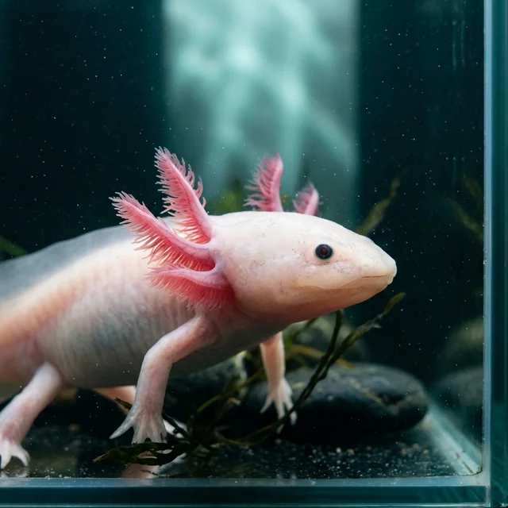
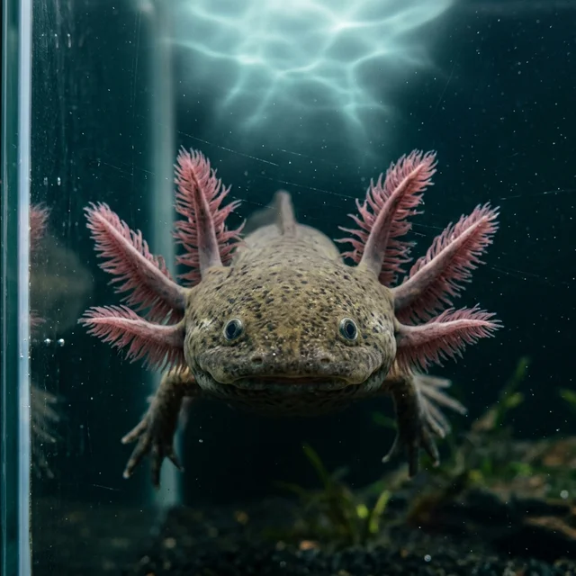
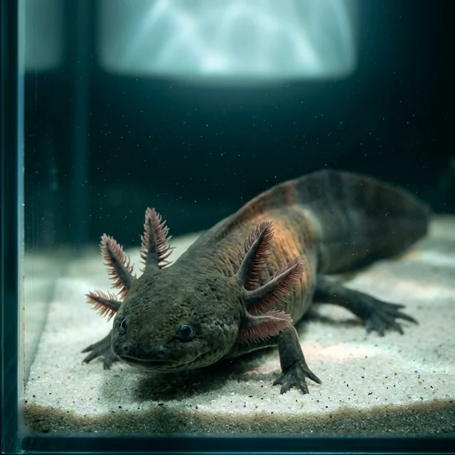

Coefficient of inbreeding, surfaced live
Every profile shows how related the two of you already are. Under 0.0625 we call it a match. Over it we call it a match with a footnote, and surface it anyway, because the alternative is an empty feed.
Gill. ranks the remaining candidates by genetic distance, gill plumage, and limb count at time of photograph. Introductions are supervised. Chemistry is not something we can measure and we have stopped pretending otherwise.
Series A led by a foundation that believed us. Studbook synced nightly.

Built with the studbook, not around it.
Every profile shows how related the two of you already are. Under 0.0625 we call it a match. Over it we call it a match with a footnote, and surface it anyway, because the alternative is an empty feed.
Photographs are timestamped against a monthly limb census. A candidate who lists four limbs and arrives with three is not dishonest, only regenerating. Both numbers appear on the card.
The axolotl face does not move. It has never moved. We stopped inferring interest from it in 2024 and now infer interest from time spent near the filter intake, which correlates at 0.31.
“I matched with a male from a different lake system. We have not spoken. The eggs are fine.”

“Gill. told me my coefficient with the candidate was 0.31. I proceeded. Gill. logged that I proceeded.”
“I lost a forelimb in March and my introduction rate went up.”

All tiers include water-quality telemetry. None include a guarantee.
for the axolotl still deciding whether to become anything
for the axolotl who is not going to metamorphose and has made peace with it
for the axolotl who is the gene pool
The stack is loaded and the biologist is on shift until six.
Open the demo →